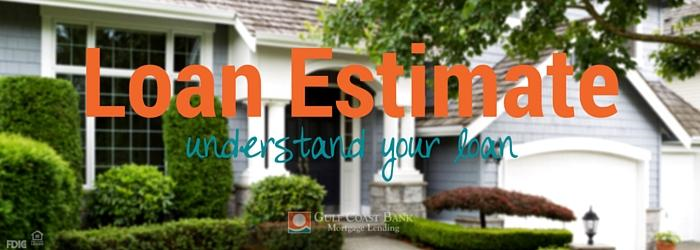

Mortgage 101: Loan Estimate
The mortgage loan estimate is the beginning of the mortgage loan process. It is the form that is going to provide you with the information you need in order to understand your loan. The Loan estimate will give you important details such as, how much you need for closing, an estimate of your payment amount, the insurance costs and other closing cost details.
Below is a summary of information posted by the CFPB regarding how you can read and understand the mortgage loan estimate. If you would like to view the CFPB's blog in its entirety, please visit the originally published blog here.
- The first section of your loan estimate will have basic info such as your name, loan term, sales price of the property you're purchasing, purpose, loan type, rate info such as whether your rate is locked and if so until what date. And other initial info. Be sure to review this info carefully and ask your lender to correct any inaccurate contact information. Even minor misspellings can cause big problems later.
- The next section reviews your specific Loan Terms.
- First you'll find the loan amount plus your down payment. This should equal the sale price of the home found in the section above. If it doesn't, ask your lender why.
- You'll also find the details of your interest rate here. If the right-hand column says "YES," your interest rate is adjustable and can change after closing. Make sure your Loan Estimate shows the type of interest rate you discussed with your mortgage lender.
- Along with you loan's specific terms you see your estimated Monthly Principle & Interest (this is not your full monthly payment, see next section), if the loan features a Prepayment Penalty and how high that penalty can be, as well if your loan has a Balloon Payment. If your loan includes a balloon payment or prepayment penalty, ask your lender about your options to be sure you're comfortable with the loan terms available to you.
- In section three you'll find your projected payments. This section is broken down into Principle & Interest, Mortgage Insurance, Escrow (which can increase over time depending on taxes and insurance policies) and finally the Estimated Total Monthly Payment. Be sure that your Estimated Total Monthly Payment meets your expectations and that you are comfortable spending this much on housing each month.
- Next you'll see the Estimated Closing Costs and Cash you need available to close on the purchase of your home or property. This is the amount you will have to pay at closing, in addition to any money you have already paid. This payment is usually made by cashier's check or wire transfer. You will need to provide your lender with proof of the source of these funds.
- On page two of your Loan Estimate your exact Closing Costs Details are disclosed. Here you will find Origination Charges, Appraisal Fees, Title Fees, homeowner's insurance premium, Property taxes are set by your local or state government, any credits to you by the lender and a final estimate of Cash to Close. Your Estimated Cash to Close is the estimated amount of money you will have to bring to closing. This section shows how the Estimated Cash to Close was calculated.
- Page three shows all additional information about your loan such as who your loan officer is, a comparisons section to compare loan estimates, and information regarding how much a late payment will cost you and the terms of that late payment.
At Gulf Coast Bank Mortgage Lending we pride ourselves in remaining people-oriented. We help our customers get what they want, one on one. We work with our customers individually to match our services to their needs, making lending easy and secure for our customers by providing straight talk instead of the old run-around.
If you have a question about your loan estimate contact your GCB Mortgage Lender for more info, or if you need a second opinion or are interested in seeing what your mortgage lending options are we're here to help. You can talk to a mortgage lender here.